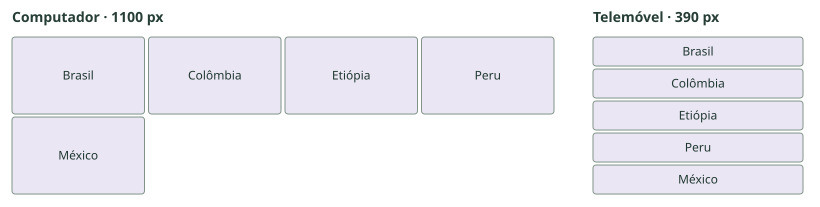

Serra Clara
Cacau e avelã. Torra média.
8,50 € · 250 g
Café da turma / Grid / G05
Objetivo: Monta um catálogo de cinco lotes que ganhe colunas sozinho quando houver espaço, sem @media. Os preços de cartões na mesma fila devem ficar alinhados, mesmo quando uma descrição tem mais texto.
Larguras para testar: 390 px, 768 px e 1100 px. São larguras da janela do navegador. Só escreves uma media query se o exercício a pedir.
No CSS: escreve 16px, sem espaço entre o número e a
unidade.
Primeiro passo: Abre style.css no editor e lê a etapa 1.
Quando fizeres uma alteração, guarda o ficheiro e atualiza esta página para veres o que
mudou.
Este esquema mostra as posições, sem escala. Para a largura intermédia, usa os testes no fim.

Área de trabalho · Catálogo de lotes
Cacau e avelã. Torra média.
8,50 € · 250 g
Caramelo, final suave.
9,20 € · 250 g
Notas florais e citrinos.
10,50 € · 250 g
Doce e ligeiramente frutado.
9,40 € · 250 g
Chocolate e especiarias.
9,10 € · 250 g
Já conheces: O padrão do slide 42: repeat(auto-fill, minmax(...)), a unidade fr e o espaço entre colunas.
Com apoio nesta ficha: A variação auto-fit encolhe as colunas completamente vazias. Compara os dois valores retirando três dos cinco cartões.
Encontras as instruções de cada etapa em style.css.
Usa o modo responsivo do navegador. Experimenta 390 px (telemóvel), 768 px (intermédio) e 1100 px (computador).
Assinala os testes que passaram. As marcas desaparecem quando atualizas a página; guarda o
resultado em registo.md.
Com cinco lotes, aumenta a largura mínima de 240 para 300 px. Prevê quantos cabem na primeira fila a 1100 px.